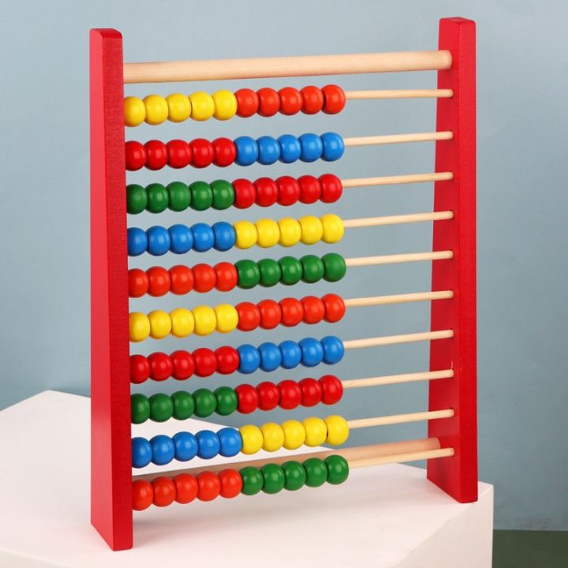

One of the first great intellectual feats of a young child is learning how to talk, closely followed by
learning how to count. From earliest childhood we are so bound up with our system of numeration
that it is a feat of imagination to consider the problems faced by early humans who had not
yet developed this facility. Careful consideration of our system of numeration leads to the
conviction that, rather than being a facility that comes naturally to a person, it | is one of
the great and remarkable achievements of the human race.
It is impossible to learn the sequence of events that led to our developing the concept of number. Even the earliest of tribes had a system of numeration that, if not advanced, was sufficient for the tasks that they had to perform. Our ancestors had little use for actual numbers; instead their considerations would have been more of the kind Is this enough? rather than How many? when they were engaged in food gathering, for example. However, when early humans first began to reflect on the nature of things around them, they discovered that they needed an idea of number simply to keep their thoughts in order. As they began to settle, grow plants and herd animals, the need for a sophisticated number system became paramount. It will never be known how and when this numeration ability developed, but it is certain that numeration was well developed by the time humans had formed even semipermanent settlements.
Evidence of early stages of arithmetic and numeration can be readily found. The indigenous peoples of Tasmania were only able to count one, two, many; those of South Africa counted one, two, two and one, two twos, two twos and one, and so on. But in real situations the number and words are often accompanied by gestures to help resolve any confusion. For example, when using the one, two, many type of system, the word many would mean, Look at my hands and see how many fingers I am showing you. This basic approach is limited in the range of numbers that it can express, but this range will generally suffice when dealing with the simpler aspects of human existence.
The lack of ability of some cultures to deal with large numbers is not really surprising. European languages, when traced back to their earlier version, are very poor in number words and expressions. The ancient Gothic word for ten, tachund, is used to express the number 100 as tachund tachund. By the seventh century, the word teon had become interchangeable with the tachund or hund of the Anglo-Saxon language, and so 100 was denoted as hund leonlig, or ten times ten. The average person in the seventh century in Europe was not as familiar with numbers as we are today. In fact, to qualify as a witness in a court of law a man had to be able to count to nine!
Perhaps the most fundamental step in developing a sense of number is not the ability to count, but rather to see that a number is really an abstract idea instead of a simple attachment to a group of particular objects. It must have been within the grasp of the earliest humans to conceive that four birds are distinct from two birds; however, it is not an elementary step to associate the number 4, as connected with four birds, to the number 4, as connected with four rocks. Associating a number as one of the qualities of a specific object is a great hindrance to the development of a true number sense. When the number 4 can be registered in the mind as a specific word, independent of the object being referenced, the individual is ready to take the first step toward the development of a notational system for numbers and, from there, to arithmetic.
Traces of the very first stages in the development of numeration can be seen in several living languages today. The numeration system of the Tsimshian language in British Columbia contains seven distinct sets of words for numbers according to the class of the item being counted: for counting flat objects and animals, for round objects and time, for people, for long objects and trees, for canoes, for measures, and for counting when no particular object is being numerated. It seems that the last is a later development while the first six groups show the relics of an older system. This diversity of number names can also be found in some widely used languages such as Japanese.
Intermixed with the development of a number sense is the development of an ability to count. Counting is not directly related to the formation of a number concept because it is possible to count by matching the items being counted against a group of pebbles, grains of corn, or the counter's fingers. These aids would have been indispensable to very early people who would have found the process impossible without some form of mechanical aid. Such aids, while different, are still used even by the most educated in today's society due to their convenience.
All counting ultimately involves reference to something other than the things being counted. At first it may have been grains or pebbles but now it is a memorised sequence of words that happen to be the names of the numbers.